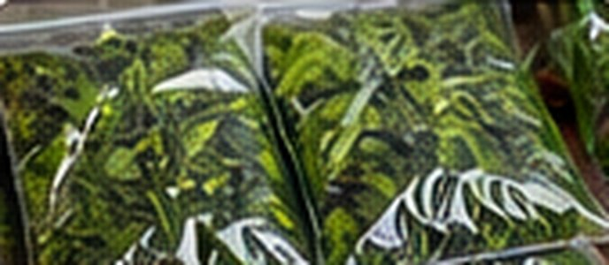

Blanched Freezer Greens for Soups
Southern · Approx. 45 minutes

Ingredients
- 2 lb fresh collard greens or kale
- Large pot of boiling water
- Large bowl of ice water
Directions
- Wash greens thoroughly, remove tough stems and chop leaves to soup-ready size.
- Consult the linked NCHFP vegetable-specific blanching guidance for the selected green and use its prescribed blanching time. Do not substitute a generic time.
- Immediately chill in ice water for the recommended cooling interval, then drain thoroughly.
- Portion cooled greens into labeled freezer bags, press out air, and freeze promptly.
- Add frozen greens to caldo verde, Southern-style greens, or soups during cooking.
Notes & serving ideas
Blanching varies by green. Check the authoritative crop-specific instructions before proceeding; this is a prep guide, not a substitute for those instructions.